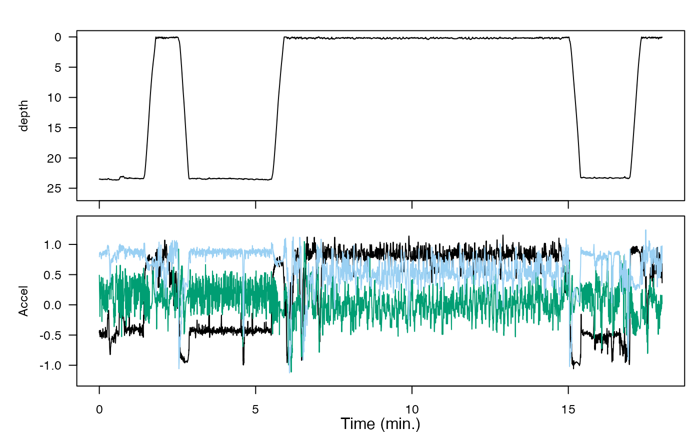

Plot time series in a single or multi-paneled figure, using base R graphics. This is useful, for example, for comparing measurements across different sensors in an animaltag data object. The time axis is automatically displayed in seconds, minutes, hours, or days according to the span of the data.
Arguments
- X
List whose elements are either lists (containing data and metadata) or vectors/matrices of time series data. See details.
- fsx
(Optional) A numeric vector whose length matches the number of sensor data streams (list elements) in X. (If shorter,
fsxwill be recycled to the appropriate length).fsxgives the sampling rate in Hz for each data object. Sampling rates are not needed when the data object(s)Xare list(s) that contain sampling rate information – and beware, becausefsx(if given) will override sensor metadata.- r
(Optional) Logical. Should the direction of the y-axis be flipped? Default is FALSE. If
ris of length one (or shorter than the number of sensor data streams in X) it will be recycled to match the number of sensor data streams. Reversed y-axes are useful, for example, for plotting dive profiles which match the physical situation (with greater depths lower in the display). If the name of a sensor list is "P" or contains the word "depth", it will automatically be reversed.- offset
(Optional) A vector of offsets, in seconds, between the start of each sensor data stream and the start of the first one. For example, if acceleration data collection started and then depth data collection commenced 436 seconds later, then the
offsetfor the depth data would be 436.- date_time_axis
(Optional) Logical. Should the x-axis units be date-times rather than time-since-start-of-recording? Ignored if
recording_startis not provided andXdoes not contain metadata on recording start time. Default is FALSE.- recording_start
(Optional) The start time of the tag recording as a
POSIXctobject. If provided, the time axis will show calendar date/times; if not, it will show days/hours/minutes/seconds (as appropriate) since time 0 = the start of recording. If a character string is provided it will be coerced to POSIXct withas.POSIXct.- panel_heights
(Optional) A vector of relative or absolute heights for the different panels (one entry for each sensor data stream in
X). Default is equal-height panels. Ifpanel_heightsis a numeric vector, it is interpreted as relative panel heights. To specify absolute panel heights in centimeters usinglcm(see help forlayout).- panel_labels
(Optional) A list of y-axis labels for the panels. Defaults to names(X).
- line_colors
(Optional) A list of colors for lines for multivariate data streams (for example, if a panel plots tri-axial acceleration, it will have three lines – their line colors will be the first three in this list). May be specified in any specification R understands for colors. Defaults to c("#000000", "#009E73", "#9ad0f3", "#0072B2", "#e79f00", "#D55E00")
- interactive
(Optional) Should an interactive figure (allowing zoom/pan/etc.) be produced? Default is FALSE. Interactive plotting requires the zoom package for its
zmfunction.- par_opts
(Optional) A list of options to be passed to
parbefore plotting. Default is mar=c(1,5,0,0), oma=c(2,0,2,1), las=1, lwd=1, cex=0.8.- ...
Additional arguments to be passed to
plot.
Details
If the input data X is an animaltag object, then all sensor variables in the object will be plotted. To plot only selected sensors from the animaltag object my_tag, for example, the input X=list(my_tag$A, my_tag$M) would plot just the accelerometer and magnetometer data. If possible, the plot will have
Note
This is a flexible plotting tool which can be used to display and explore sensor data with different sampling rates on a uniform time grid.
Examples
plott_base(list(depth = harbor_seal$P, Accel = harbor_seal$A))
